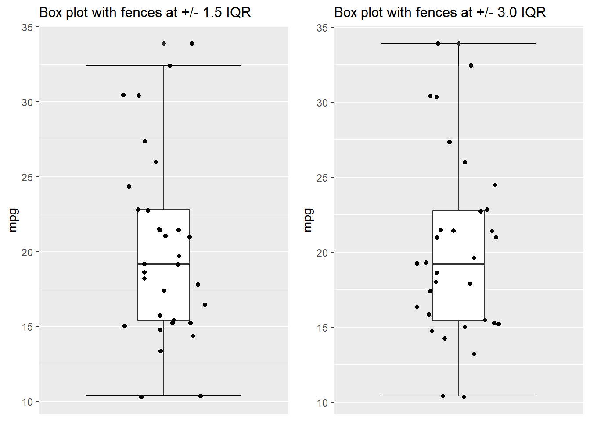
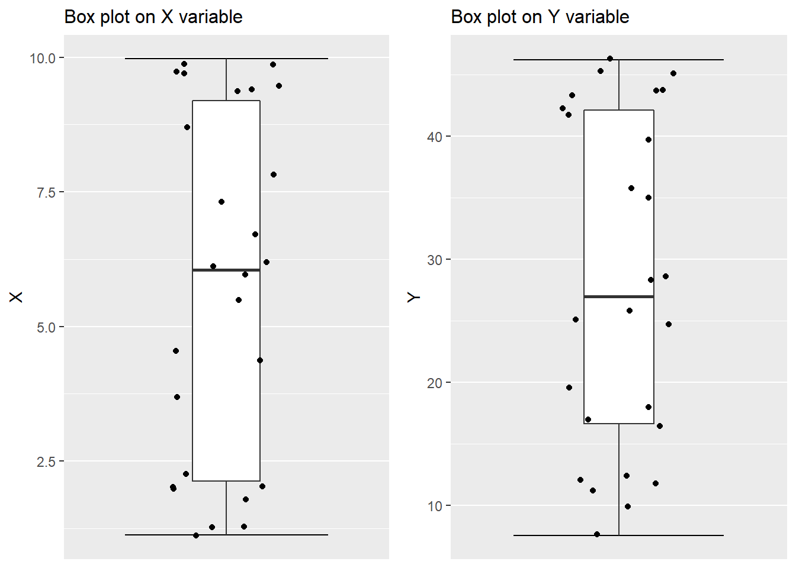
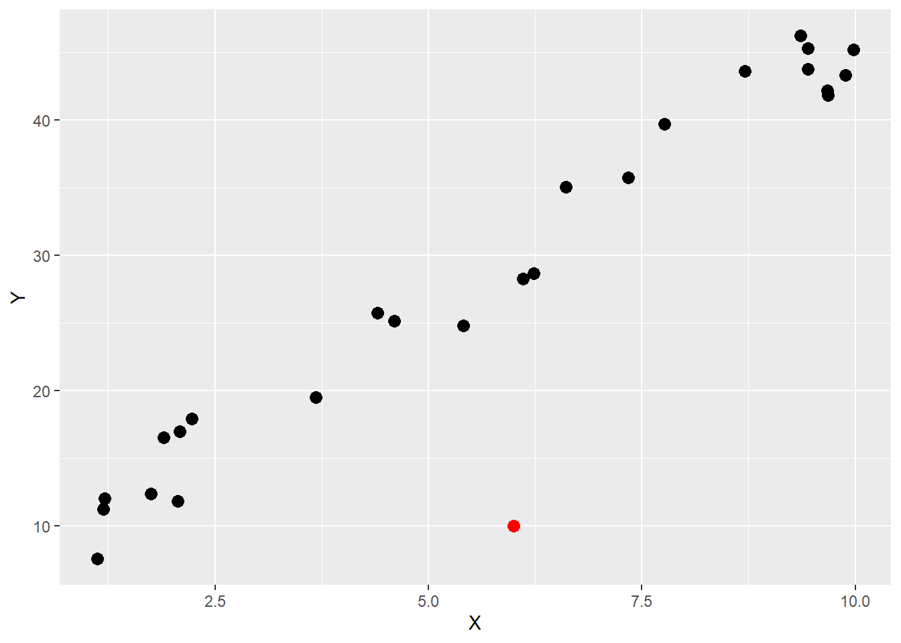
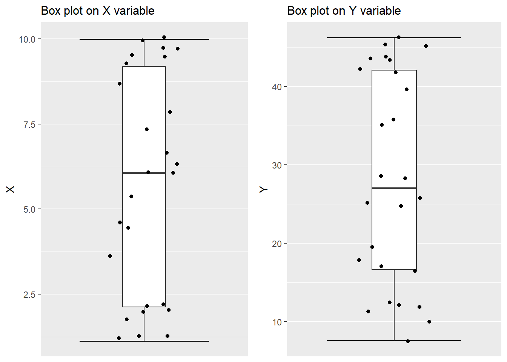
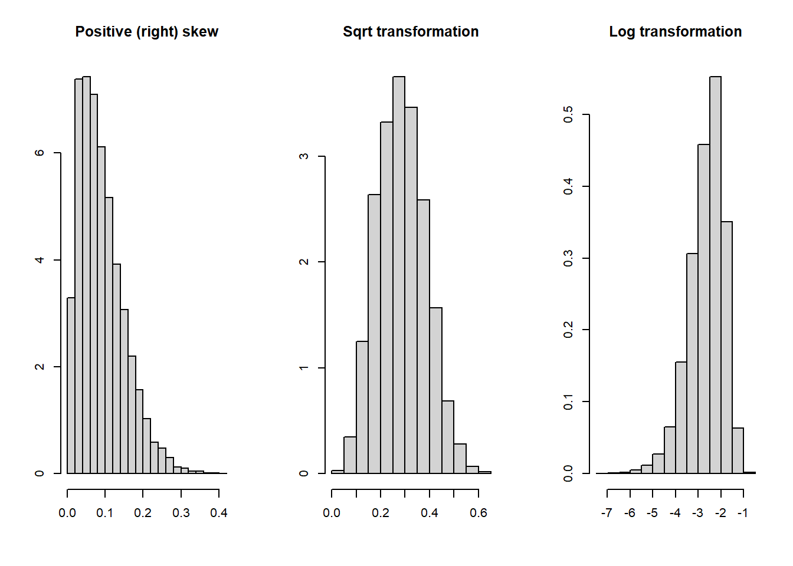
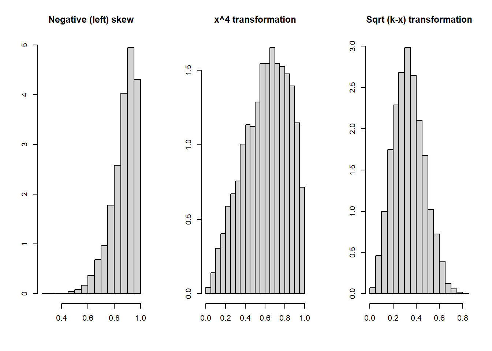

Chapter 4 Data preparation
4.1 Introduction
Data preparation includes the processes of obtaining the data, cleaning it, feature engineering, and exploratory analysis. Data analysts report that 60 to 90 percent of the time on a project is often consumed by these processes.
There are many possible ways to perform the data preparation processes and many steps might be taken before the data is ready for analysis. It is very important to document whatever steps are taken to join, clean, transform, or otherwise prepare the data so that reference can be made when new data is to be analyzed. *[A common problem when working with spreadsheets is that after making several modifications to the data, it is difficult to reproduce the steps unless they are somehow recorded. This is an added benefit of using KNIME since the workflows provide a graphical record of all steps taken.]
4.2 Obtaining the needed data
One aspect of the analytics process that is surprising to many newcomers is that a company’s or organization’s data warehouse will not provide the data that is needed in the correct form. The data must be assembled, cleaned and custom fitted to the analytics problem.6 This process is most efficient and effective when the analyst has good knowledge of the business itself or has a domain expert on the project team.
Data from a company’s internal systems may need to be integrated with census data. Or weather data. Or traffic data. Or calendar data indicating holidays and weekends, etc. Data base tools such as joins involve linking records between two or more data bases by matching what is known as a key field.
External data from the web, government, and commercial sources may be needed and integrated into a usable structure. Most predictive and data mining software requires that the data to be analyzed is in a well-formed tabular structure or flat file. Variables should be in the columns and observations in the rows. If the data source has variables in the rows and observations in the columns, the data table must be transposed.
It is also important that the proper type of data is available. For example, if a predictive model is to be developed, it is necessary to have both predictors and outcome variables. If a binary outcome is to be predicted, then there must be enough instances of both binary outcomes. For example, if a predictive model to identify fraud requires observations which are both fraudulent and not fraudulent.
As the data is being assembled one may find that it is not going to be appropriate or sufficient to address the problem identified in the first step. Then, the business problem might have to be revised or new ways explored to obtain the required data.
4.3 Data cleaning
After obtaining the data it might include inaccurate, incomplete, or inconsistent values; there might be duplicate records, spelling errors, or simply errors from the original data capture. Trying to analyze data that has such errors is bound to lead to incorrect or misleading results. Data cleaning (aka data scrubbing or data cleansing) prior to model building is extremely important. It is not as simple as deleting records with apparent records. Instead, it is important maximize accuracy while not deleting information. The goal is to make sure that the data set submitted to the modeling process is of the highest quality. Some of the steps in the data cleaning process include:
- Removing unneeded columns (variables) and/or rows.
- Removing duplicate observations.
- Removing variables that have constant values for all observations.
- Removing data that is out of scope and/or not within the required time frame.
- Finding and correcting impossible or non-sensible values where logical constraints can be specified.
- Checking conditions across variable that must be satisfied. (For example, age in years should equal current year minus birth year, population density should equal total population divided by area, and so on.)
- Removing duplicate observations.
- Removing variables that have constant values for all observations.
- Identifying and dealing with outliers.
- Identifying and dealing with missing values.
- Finding misspellings, out-of-range, or impossible values.
- Checking to make sure that the range of each variable is correct. (For example, ensuring that dates, geographic regions, and other variables fall into the proper range.)
- Making sure that the formats and units of measurement are consistent.
- Are the variables measured in the same way over time or have the data definitions been changed?
- Are the variables from different data sets available at the same level of granularity?
- ensuring that regular expressions such as phone numbers, zip codes, social security numbers, etc. are in a consistent and correct format.
This is an imposing list and there may be additional steps that might be needed. Also, some of the issues may not be relevant to a particular project. There is no simple process to follow since it depends on the specific variables in the data.
KNIME provides several nodes that can be used for cleaning the data. (Figure 4.1)
Figure 4.1: Some of the KNIME nodes useful for data cleaning.
4.3.1 Missing values
The presence of missing values is one of the most difficult problems in analytics. In an ideal situation there would be valid values for every observation. However, it is very likely that some missing values will be present for some of the variables in most real data sets.
The first thing to do is to try to find the value for the missing information. While it would be great if these values could be found, in practice it is unlikely.
Missing values can be indicated in variety of ways in a data set, so analysts need to be on the look out for such indicators. Some of the ways that missing values are indicated in data sets include the following:
Null
99, 999, -999, etc.
-1
?
.
NA
None
It is important to recognize how the original values were coded and to recode the values to a common indicator. This is especially true for numeric variable, where the missing value code could distort statistics such as the mean and variance.
Missing values occur for many reasons. Missing values could be generated due to structural reasons. For example, a variable might ask if a person is homeowner or not. If yes, then a question might ask for the approximate value of the home. If no, the value of the home is missing, as it should be.
In survey research, it is very common for respondents to refuse to answer questions about income. Respondents may simply not know the answer to a question, resulting in a missing value.
4.3.1.0.1 Types of missing values
A classification scheme for missing values developed by (Rubin 1976) stipulated three types of missing values:
- MCAR - Missing completely at random.
- MAR - Missing at random.
- MNAR - Not missing at random.
MCAR is the most favorable situation, since it means that the values which are missing have no relation with either target or predictor values. The observations with missing values will have similar distributions as those without missing values. The missing values in the rows of a data set could reflect random errors of data collection.
MAR means that there are likely systematic differences between the observations with versus those without missing values. The assumption is that is related to some of the observed predictor variables. For example, missing values for income might relate to income and age, with those higher in income and older more likely to omit income.
MNAR refers to situations where the likelihood of a value to be missing is not related to other variables but instead is related to the value itself. For example, in a data set on credit worthiness, a question on personal bankruptcies may be left blank by persons who did declare bankruptcy. This is the most pernicious type of missingness. It is very difficult to determine whether missing values are MNAR versus MAR or MCAR. Domain knowledge can be helpful to identify when MNAR is present.
4.3.1.1 Handling missing values
If the proportion of observations with missing information is small in a large data set (e.g., less than 1%), those observations can probably be deleted. This is known as listwise deletion. Before dropping observations, however, it is important to check whether the missing values are concentrated in just a couple of variables or if many of most of the observations have at least one missing value. In the latter case, it is possible, even with a small percentage of missing values, that a data set with a million observations could be reduced to only thousands using listwise deletion.
Another approach consider is to delete columns with large percentages of missing data. For example, if 75% of observations on a particular variable are missing, then the column might be deleted. This, of course, should not be done if the situation is deemed NMAR.
4.3.1.2 Imputation methods
Imputation refers to the substitution of a value to replace the missing values in a data set. (If MNAR is suspected, the imputation techniques discussed in the following should not be used since the results of analyses can be biased and misleading.) There are many ways of doing so:
- For numeric variables:
- Substitute a constant value for all missing values in numeric variables.
- Substitute missing values with mean or median of the non-missing values.
- Regress non-missing values of a variable on other variables in the data set and then use the regression equation to predict the most likely values in the observations with the missing values.
- Use k nearest neighbors to find observations with similar values on the non-missing variables and then use those observations to impute the missing values, for example, by taking the average of the non-missing values from k nearest neighbors.
- For categorical variables:
- Substitute for the missing values the mode of the values from the non-missing values.
- Explicitly consider the missing values as simply another level of the categorical variable.
- Use a model to predict category level for the missing values from non-missing observations. One such technique to consider is decision trees.
Missing values for each variable in a data set can be identified using the KNIME Statistics node. The KNIME node “Missing Value” handles missing values for both numeric and string variables. The node can replace all numeric and string variables in the same manner or the type of imputation can be set differently for each variable. The approach to handling missing values depends on the type of variable. The following options are available in the “Missing Value” node for numeric variables:
- For any type of variable with missing values:
- Do nothing.
- Remove the row with the missing value.
- Impute a fixed value – replace missing values with a user specified constant for strings or numeric variables.
- For numeric variables with missing values:
- Replace values with a summary statistic – the maximum, minimum, mean, median, or rounded mean.
- For time series data with missing values:
- Linear Interpolation – estimate a missing value via a straight-line trend either increasing or decreasing.
- Average Interpolation – take the average of a number of previous and next non-missing values.
- Moving average – calculate the mean of a specified number of look-ahead and look-behind values.
- For string or nominal variables:
- Most frequent value – replace the missing values with the mode of the variable.
Additional methods for missing value imputation are available in R such as:
- MICE (Multivariate Imputation by Chained Equations) (mice 2021)
- Amelia (A Program for Missing Data) (Amelia 2021)
- VIM (Visualization and Imputation of Missing Values) (VIM 2021)
- mlr (Machine learning in R) (mlr 2021)
4.3.2 Outliers
Outliers are defined as values of a variable that are an “abnormal distance” from other values in a data set - extremely high or extremely low. Whether a value is an outlier is not always easy to say as it may depend on domain knowledge. Extreme outliers can cause problems for many algorithms and can distort both supervised and unsupervised models. There are many graphical and statistical techniques that can be used to detect outliers.
Outliers are sometimes due to data entry errors, e.g., when an extra zero or two is added to value by mistake. In other cases, a pattern of outlying values can be identified which may suggest how to deal with them.
In general, it is not a good idea to simply remove outliers without further investigation. If we are very sure that an outlier is an error, the observation can be removed if the fraction of cases with outliers is very small.
Graphical approach to detecting outliers


Statistical methods
One statistical method is to standardize a variable by subtracting the mean and dividing by the standard deviation. Then, assuming normality, values outside plus or minus two or three standard deviations can be evaluated as possible outliers.
Another popular approach is to calculate Tukey’s upper and lower fences which are shown graphically in histograms (Tukey 1977). The formulas are based on the first (Q1) and third (Q3) quartiles. Using this formula, k can be set by the analyst. The advantage of calculating the fences rather than using histograms is that the analyst can define what outliers are by setting k. For deviations from normality, k is typically set at 1.5. For extreme outliers, the value of k can be set at 3.0
Lower fence = Q1 - k(Q3 - Q1) Upper fence = Q3 + k(Q3 - Q1)
The KNIME node Numeric Outliers can be used to detect and potentially deal with outliers. This node allows the user to specify k. To identify extreme outliers a typical practice is to set k equal to 3.
The advantage of calculating the fences rather than using histograms is that the analyst can define what outliers are by setting k. The value of k depends on the purpose of the test. For deviations from normality, k is typically set at 1.5, although others tests for normality are available and normality of the predictor values is not required.
Multivariate outliers
To this point the discussion has focused on univariate outliers. Even if no univariate outliers are found, it is possible that outliers are present that can be only detected using multivariate methods.
For example, the following scatterplot shows an outlier in red.

Box plots are created on the X and Y variables. No outliers are identified.

To identify multivariate outliers, the Mahalanobis Distance can be used. A detailed discussion of how to do this is in (Cansiz 2020). This article uses R. KNIME has a component called “outliers 1 column” that detects outliers using Mahalanobis distance that requires Python integration. An R code snippet can be developed for Mahalanobis distance using the R package mvoutlier (mvoutlier 2021).
4.3.2.1 Handling outliers
Identifying potential outliers in a variable is usually straightforward, but deciding what to do about outliers is not simple. Outlying values could be legitimate and correct, so routinely deleting observations is not a recommended practice. In fact, in some cases detecting outliers is actually the object of analysis in applications such as intrusion detection in computer systems, determining fraud in financial activity, detecting unusual patterns in medical data, and other areas. (Aggarwal 2017)
The KNIME node Number Outliers detects and provides several options to treat any identified outliers. The treatment options are:
- Remove each row containing an outlier (although this should not be done without careful consideration).7
- Replace each outlier with a missing value indicator.
- Replace each outlier with the closest value within the permitted interval.
Sometimes a log transformation will reduce variability in a predictor and lessen or remove outliers. The Math node in KNIME can be used to create transformations.
Another approach is to bin a continuous variable by dividing it into groups. This creates an ordinal variable where the values in each bin can be controlled. The KNIME node Numeric Binner can be used define and create bins. The numeric variate is transformed into a string column. Of course, detail is lost is binning, but this is frequently a useful technique.
4.4 Feature engineering
Feature engineering refers to steps taken to improve the accuracy of predictive models though data transformations, constructions of new variables from available variables, or acquiring additional variables to enhance model performance. Feature engineering, despite its technical connotation is really more of an art than a science that is learned through experience. However, there are still useful suggestions for starting the process.
Features and independent variables are basically the same thing. Independent variables (and related terms such as predictors, inputs, and so on) are used by statisticians while the term features is more prevalent in the context of machine learning.8
4.4.1 Data transformations
To identify the need for transforming predictor variables, descriptive statistics and data visualizations are important tools. Histograms, box plots, scatter plots, and other basic visualization techniques can be routinely applied to numeric predictors.
4.4.1.1 Handling skewed data
After outliers, missing values, and other anomalies have been dealt with, the distributions of variables should be checked for extreme skewness. While predictor values in machine learning models do not have to be perfectly symmetrical, skewed variables can distort or bias model performance. The models can be overly sensitive to the tails of the variable distributions.
Detecting skewness is usually straightforward using histograms. Skewness can be reduced by using transformations:
- For positive or left skew, try the following on a variable x:
- log(k + x)
- sqrt(k + x)
- where k is a large enough positive number to insure that the log and square root are applied only to numbers > 0.
- For negative or right skew, try the following on a variable x:
- xn, where n is positive number.
- sqrt(k - x) where k is greater than the largest number in x.
For the positive skew in the following example, the square root transformation created a more symmetric distribution the log function. For the negative skew, the square root of (k-x) worked best, Selecting the transformation is usually a trial- and-error process. 

4.4.1.2 Transformations to achieve linearity
For some machine learning methods, such as ordinary regression and logistic regression it is important that the relationship between the predictors and the target variable is a straight line or linear. Other predictive models, such as neural nets and decision trees are not as reliant on linearity, but transformations to linearity will not hurt for such models.
To check for linearity a separate scatterplot of the target variable versus each continuous predictor usually diagnostic. If non-linearity is found, then transformations can be tried on either the target variable or the predictors. In my experience, it is better to try transformations on the predictors and leave the target variable as is. Transforming the target variable can sometimes cause other problems with modeling. With predictive models the objective is almost always to make predictions in the units of the original variable. Therefore, if the target variable is transformed using the log (a common suggestion in many texts), at the final stage of the analysis the inverse of the log must be applied to the result. This is not always a straightforward step. Performance measures such as R2 and root mean squared error cannot be compared between models where the target has been transformed versus not transformed. In general, it’s better to attempt to achieve linearity using the predictors.
The following chart shows typical transformations for different non-linear relationships. (Figure 4.2)
Figure 4.2: Transformations to achieve linearity.
A demonstration of how these transformations work to straighten relationships is shown here.
Figure 4.3: Examples of transformations.
Figure 4.4: Examples of transformations.
Figure 4.5: Examples of transformations.
Figure 4.6: Examples of transformations.
Deriving new variables
New variables can be created used two or more variables already in the data set. This requires more than statistical and computer skills. It requires understanding of the business problem.
For example, if you are predicting whether a person will cancel a cell phone contract or not, the data may have the number of calls made from the phone. A new measure might be the number of calls per day. Or the number of days when no call is made. Or the number of calls made divided by the number of calls received.
4.4.2 Data exploration
Once the data set has been cleaned, the next step is to thoroughly explore the data. Some of this may have been done in the previous step, but here is where descriptive statistics and graphical representations are most useful. Exploratory data analysis is an approach/philosophy for data analysis that employs a variety of graphical and some descriptive statistical techniques to provide insight into a data set.
Exploratory analysis is open-ended, since the goal is to generate clues about what is happening which can then open new avenues of investigation (“hypothesis generation” rather than the more formal “hypothesis testing” featured prominently in many books on statistics). This analysis can also support the selection of appropriate modeling techniques, uncover underlying structure in the data, and further assess how clean the data is.
Exploratory analysis is not a highly linear, rigid process. Different people will literally find things differently. The software used for exploratory analysis should ideally be both agile and functional.
Commonly used graphs include:
- Scatter plots
- Bar plots
- Histograms
- Box and whisker plots
- Density plots
- Bubble charts
Commonly used descriptive statistics include:
- Mean, median, mode
- Variance, standard deviation
- Range, Max, Min
- Correlations and covariances
- Frequencies and percentages
- Percentiles and quartiles
References
Related terms include data wrangling and data munging.↩︎
Outliers should not be routinely deleted because they are not necessarily bad observations. In some cases, if correct, they can be quite informative. On the other hand, if the outlier appears to be a recording or measurement error or otherwise invalid, then the outlier can be discarded. Clearly, it is important to have domain knowledge to make such judgments.↩︎
Some authors distinguish between “raw” variables and “features” with the latter referring to constructed variables.↩︎